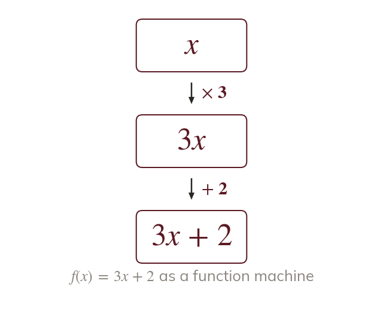
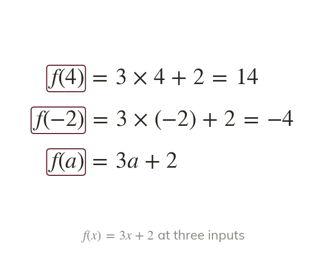
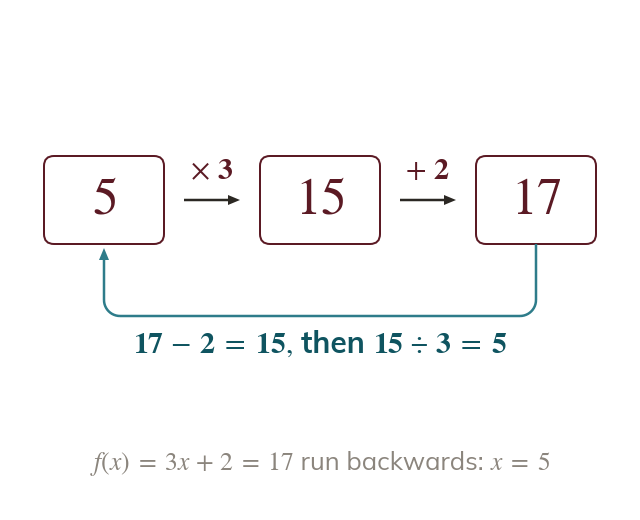
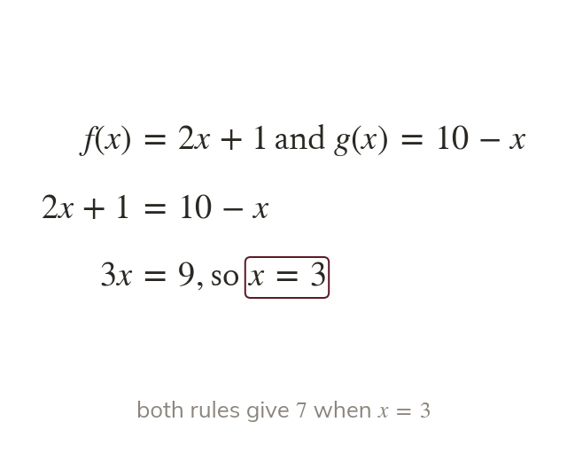

One input, one output
A function is a rule giving exactly one output for each input. Here the rule multiplies by then adds
A function is a rule with a name, so says exactly which rule to use on which input. This notation is the language of the whole topic, from domains and composites to inverses and graph transformations.
Work down the page at your own pace. Write every answer in your book first, then click to check it.
Read each card, then follow the worked examples one step at a time.

A function is a rule giving exactly one output for each input. Here the rule multiplies by then adds

In the input replaces every x. A negative or algebraic input goes in a bracket.
Pick an answer. If it's wrong, the feedback tells you which mistake it was.
Read each card, then follow the worked examples one step at a time.

An equation asks which input gives the output So it is solved for never substituted into.

Setting finds the input where both rules agree. Write each rule out, then solve.
Pick an answer. If it's wrong, the feedback tells you which mistake it was.
Finished? Next lesson: 11H.9.2 Domain and Range.
For each skill, tap the one that is true for you today. Your Revise pages start with anything you mark Not yet.
Your ratings are saved on this device only.
Log in, then search for a code to practise that skill.
Videos, worksheets and more on each part of this lesson.